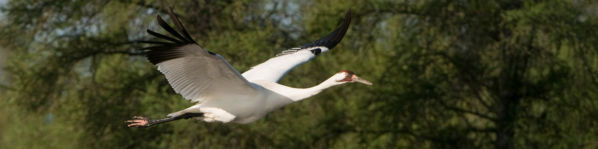

Report on the use of passive acoustic monitoring in Wood Buffalo National Park

Abstract
Passive acoustic monitoring has proven to be a valuable tool for monitoring vocalizing species. Environmental sensors are becoming increasingly easy to program and can autonomously generate extensive data sets of the soundscape, becoming an invaluable resource for ecological integrity monitoring. Wood Buffalo National Park deployed autonomous recording units (ARUs) across 66 locations during a comprehensive five-year survey. ARUs detected a total of 129 species including birds, amphibians and mammals. The analysis revealed
Land Acknowledgement
In the spirit of Reconciliation, we respectfully acknowledge that the lands of Wood Buffalo National Park where this study took place are the traditional territories of the Mikisew Cree First Nation, Athabasca Chipewyan First Nation, Fort Chipewyan Métis, Salt River First Nation, K’atl’odeeche First Nation, Deninu Kue First Nation, Fort Smith Métis Council, Hay River Métis Council, and the Fort Resolution Métis Council.
Introduction
Human activities have been identified as key pressures and contributors to the global decline in forest wildlife (Allan et al. (2017)). The repercussions of habitat fragmentation (Fahrig (2003)) and loss (Hanski (2011)), climate change (Mantyka-pringle, Martin, and Rhodes (2012), Sattar et al. (2021), Abrahms et al. (2023)), and increased access to sensitive areas exert direct and indirect pressures on forest biodiversity, particularly in managed regions in Canada (Lemieux et al. (2011)).
Allan, James R, Oscar Venter, Sean Maxwell, Bastian Bertzky, Kendall Jones, Yichuan Shi, and James EM Watson. 2017. “Recent Increases in Human Pressure and Forest Loss Threaten Many Natural World Heritage Sites.” Biological Conservation 206: 47–55.
Fahrig, Lenore. 2003. “Effects of Habitat Fragmentation on Biodiversity.” Annual Review of Ecology, Evolution, and Systematics 34 (1): 487–515.
Hanski, Ilkka. 2011. “Habitat Loss, the Dynamics of Biodiversity, and a Perspective on Conservation.” Ambio 40 (3): 248–55.
Mantyka-pringle, Chrystal S, Tara G Martin, and Jonathan R Rhodes. 2012. “Interactions Between Climate and Habitat Loss Effects on Biodiversity: A Systematic Review and Meta-Analysis.” Global Change Biology 18 (4): 1239–52.
Sattar, Q, ME Maqbool, R Ehsan, S Akhtar, Q Sattar, ME Maqbool, R Ehsan, and S Akhtar. 2021. “Review on Climate Change and Its Effect on Wildlife and Ecosystem.” Open J Environ Biol 6 (1): 008–14.
Abrahms, Briana, Neil H Carter, TJ Clark-Wolf, Kaitlyn M Gaynor, Erik Johansson, Alex McInturff, Anna C Nisi, Kasim Rafiq, and Leigh West. 2023. “Climate Change as a Global Amplifier of Human–Wildlife Conflict.” Nature Climate Change 13 (3): 224–34.
Lemieux, Christopher J, Thomas J Beechey, Daniel J Scott, and Paul A Gray. 2011. “The State of Climate Change Adaptation in Canada’s Protected Areas Sector.” The Canadian Geographer/Le Géographe Canadien 55 (3): 301–17.
Shonfield, Julia, and Erin M Bayne. 2017. “Autonomous Recording Units in Avian Ecological Research: Current Use and Future Applications.” Avian Conservation & Ecology 12 (1).
Sugai, Larissa Sayuri Moreira, Thiago Sanna Freire Silva, Jr Ribeiro José Wagner, and Diego Llusia. 2018. “Terrestrial Passive Acoustic Monitoring: Review and Perspectives.” BioScience 69 (1): 15–25. https://doi.org/10.1093/biosci/biy147.
In 2018, Wood Buffalo National Park’s Forested Region initiated a program incorporating autonomous recording units (ARUs) for passive acoustic monitoring (PAM) of the Park’s wildlife. ARUs are compact environmental sensors that are designed to passively record the environment (Shonfield and Bayne (2017)), capturing vocalizing species like birds and amphibians, which is growing in use across the globe (Sugai et al. (2018)). This technology enables resource managers to conduct prolonged surveys with minimal human interference. The subsequent data collected by these units contribute valuable information to ecological integrity metrics such as species richness, diversity, occupancy, and trends over time. This data aids decision-making and management within the Park. Given the rapid and ease of accumulating data from these units, maintaining a high standard of data integrity is paramount to ensure future data interoperability and sharing. WildTrax is an online platform developed by the Alberta Biodiversity Monitoring Institute (ABMI) for users of environmental sensors to help addresses these big data challenges by providing solutions to standardize, harmonize, and share data.
The objectives of this report are to:
- Describe the data management and processing procedures for the acoustic data collected from 2018 to 2023;
- Utilize traditional human tagging, visual scanning and automated recognition techniques to detect and count species and individuals heard on recordings;
- Define straightforward methods for evaluating species presence, species richness, and species occupancy over time at various locations; * Offer recommendations for ongoing monitoring approaches to contribute to the assessment of ecological integrity in forest ecosystems;
- Facilitate data publication to the public, resource managers, academic institutions, and any other relevant agencies
Methods
Data were collected during the spring and summer seasons from 2018 to 2023. A total of 66 locations were surveyed over the five-year period:
Locations were surveyed on rotation with 0 locations () surveyed each year. A detailed list of all survey years can be found in Table 1 (?@tbl-loc-summary) and illustrated in Figure 1 (Figure 1). ARUs were deployed at the beginning of the breeding season in April-May, and rotated locations until their final retrieval in July-August. The ARUs were set to record for []. On average, each ARU recorded for
Data collection and management
Community data processing
The principal goal for data processing was to describe the acoustic community of species heard at locations while choosing a large enough subset of recordings for analyses. To ensure balanced replication, for each location and year surveyed, four randomly selected recordings were processed for 3-minutes between the hours of 4:00 AM - 7:59 AM ideally on four separate dates (see ?@tbl-loc-repl), and four recordings during the dusk hours (19:00 - 23:00) for nocturnal vocalizing species. Four recordings will ensure that we have the minimum number of samples for a simple occupancy analysis (Darryl I. MacKenzie et al. (2002) and Darryl I. MacKenzie et al. (2003)). Tags are made using count-removal (see Farnsworth et al. (2002), Sólymos et al. (2018)) where tags are only made at the time of first detection of each individual heard on the recordings. In case a species was overly abundant a TMTT (‘too many to tag’) flag was used (see ?@tbl-tmtt). 2% of the total tags were TMTT but were subsequently converted to numeric using wildRtrax::wt_replace_tmtt. We also verified that all tags that were created were checked by a second observer (n = 0.44) to ensure accuracy of detections (see ?@tbl-verified). Amphibian abundance was estimated at the time of first detection using the North American Amphibian Monitoring Program with abundance of species being estimated on the scale of “calling intensity index” (CI) of 1 - 3. Mammals such as Red Squirrel, were also noted on the recordings. After the data are processed in WildTrax, the wildRtrax package is use to download the data into a standard format prepared for analysis. The wt_download_report function downloads the data directly to a R framework for easy manipulation (see wildRtrax APIs).
MacKenzie, Darryl I, James D Nichols, Gideon B Lachman, Sam Droege, J Andrew Royle, and Catherine A Langtimm. 2002. “Estimating Site Occupancy Rates When Detection Probabilities Are Less Than One.” Ecology 83 (8): 2248–55.
MacKenzie, Darryl I., James D. Nichols, James E. Hines, Melinda G. Knutson, and Alan B. Franklin. 2003. “ESTIMATING SITE OCCUPANCY, COLONIZATION, AND LOCAL EXTINCTION WHEN a SPECIES IS DETECTED IMPERFECTLY.” Ecology 84 (8): 2200–2207. https://doi.org/https://doi.org/10.1890/02-3090.
Farnsworth, George L, Kenneth H Pollock, James D Nichols, Theodore R Simons, James E Hines, and John R Sauer. 2002. “A Removal Model for Estimating Detection Probabilities from Point-Count Surveys.” The Auk 119 (2): 414–25.
Sólymos, Péter, Steven M. Matsuoka, Steven G. Cumming, Diana Stralberg, Patricia Fontaine, Fiona K. A. Schmiegelow, Samantha J. Song, and Erin M. Bayne. 2018. “Evaluating time-removal models for estimating availability of boreal birds during point count surveys: Sample size requirements and model complexity.” The Condor 120 (4): 765–86. https://doi.org/10.1650/CONDOR-18-32.1.
Results
Species richness
A total of 129 species were found across the five years. ?@fig-spp-rich-locs describes the relationship of species richness across each location and survey year with ?@fig-spp-rich-annual showing the relationship between species richness and survey effort.